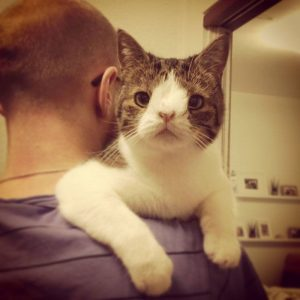

Многие любители кошек уже знают о коте Монти из Копенгагена, который обладает весьма своеобразной мордочкой из-за отсутствия части носовой перегородки (результат хромосомной аномалии).
Ему было 3 года, когда Майкл Бьорн и Микала Клейн из Дании забрали его в 2013 году из приюта, где он провел долгое время, поскольку люди пугались его необычной мордочки и никто не хотел брать его. Но, к счастью, у людей разные вкусы. Микала случайно увидела фотографию Монти на вебсайте приюта кошек в Копенгагене, и они с мужем сразу же влюбились в эту уникальную и очень печальную физиономию. На следующий день они уже были в приюте и наблюдали, как Монти (его тогда величали Бандитом) разгуливал среди множества бездомных кошек, спокойно играл и не отвечал на задирания других животных.
Майкл осторожно поднял Монти на руки и был поражен его серьезным и любящим взглядом, как будто кот сразу же доверился ему. Короче, они взяли его домой не раздумывая. Потом они говорили, что это была обоюдная любовь с первого муррра.
Первое, что они сделали — поменяли неподходящую этому мягкому и дружелюбному коту бандитскую кличку на имя Монти ( он им напомнил песню Монти Пайтона «Всегда смотри на яркую сторону жизни»). Дальше хозяева стали знакомить новичка со своими животными — спасенным трехногим котом Миккелем (Mikkel) и здоровым пушистым великаном Малле (Malle). Монти сразу прижился в семье. благодаря своему мягкому характеру, но проблем со здоровьем у бедняги оказалось предостаточно.
Прежде всего у Монти были проблемы с дыханием и он часто чихал из-за отсутствия носовой перегородки. Потом выяснилось, что у кота во время сна случается недержание (правда не очень сильное). Кот при каждом инциденте очень расстраивался и становился подавленным, поэтому Микала старалась убирать мокрые вещи до того, как кот проснется. Она только отшучивалась, что Монти придется научиться жить с этим, и что лучшим ее другом стала стиральная машинка.
Время шло, Монти обожал своих симпатичных приемных родителей, все время сопровождал их, искал возможности погладиться и залезть на руки. Ночью спал с хозяевами, только так чувствуя себя в безопасности. В интервью РurrfectСatNnames Микала рассказывала: «Он любит лежать у вас на коленях, а ночью его любимое место в объятиях Майкла — хорошо, что это не соревнование, потому что я не уверена, кто победил бы — Я или милый любящий Монти.» Одно было плохо — мочеиспускание и затруднения с дыханием у Монти только ухудшались.
Одно время хозяева даже стали подумывать о том, чтобы найти коту другой приемный дом, поскольку сомневались, что Монти чувствует себя у них комфортно. Но отдать любимца они, конечно же, не смогли. Да это и не удивительно — просто всмотритесь в лица этих симпатичных ребят, и в то, как трепетно они относятся к своему «Аватару» (так кота остроумно прозвали в сетях, и сходство действительно есть ) А потом ветеринары провели тщательное обследование здоровья Монти и обнаружили, что он страдает крайне редким для кошек заболеванием, которое у людей называется синдромом Дауна. К счастью, в результате длительного лечения коту стало заметно лучше (теперь мочеиспускание случается не чаще 2-3 раз в месяц). А поскольку кот и понятия не имел, что у него с внешностью что-то не как у всех, жить он стал просто в свое удовольствие.
Майкл рассказывал: «Монти всегда счастлив! Он всегда ведет себя, как счастливый котенок, это просто фантастика! Он хочет принять участие во всем, что я делаю, и если он не может достать до высоких полок, он начинает мяукать, пока я не подниму его. Через несколько минут он будет мяукать снова, и я его унесу. Он полностью доверяет нам, и это потрясающе!» «Одна из самых приятных вещей, которую Монти делает, это когда он хочет, чтобы я лег с ним спать. Он будет мяукать, глядя на меня, пока я не спрошу «что ты хочешь». Затем он «кричит» на меня, и мне приходится следовать за ним, чтобы увидеть, чего он там хочет. Он будет идти передо мной, оглядываясь назад, чтобы посмотреть, продолжаю ли я следовать за ним. Затем он обычно вскакивает на кровать и начинает «замешивать» ее, мурлычет очень громко пока я не лягу в постель. Его хвост становится очень пушистым, и это называется «синдром пухлых хвостов», некоторые кошки так распушают хвост, когда они действительно взволнованы и счастливы. Когда мы оказываемся в постели, Монти будет лежать на моих руках, и если я перестану ласкать его, он будет мяукать очень громко, чтобы сказать: «Приласкай меня еще, папа!»
А еще интересная особенность поведения этого «инопланетного» кота — практически полное отсутствие страха — он даже к ветеринарам ходит с удовольствием. На публике, например на многолюдных благотворительных встречах в поддержку кошачьих приютов, куда хозяева неоднократно брали своего знаменитого на весь мир кота, Монти вел себя со всеми очень спокойно и общительно. Казалось. что внимание людей было ему прияно, но только он должен был все время видеть своих хозяев и чувствовать их защиту.
Микала рассказывала: «Монти очень нежный кот, но также имеет очень сильную личность. Когда он чего-то хочет, он вопит, пока не получит это. Например, если он хочет приласкаться, его хвост становится очень пухлым, он начинает мурлыкать и кричать (мяукать) очень громко, пока мы не обратим на него внимание и не прижмемся к нему.» «Иногда его посещают некоторые действительно странные идеи. Вдруг он хочет подняться высоко на шкаф! Обычно это случается очень рано утром, а затем он начинает кричать, царапая шкаф. Единственное, что мы можем сделать, это поднять его, подождать несколько минут, а затем снова опустить на пол. Монти всегда счастлив и чувствует себя в полной безопасности, когда Майкл рядом. Если он нервничает или не любит чье-то присутствие, он просто даст нам это понять коротким грустным мяуканьем, но никогда не будет использовать свои когти!»
Когда Монти стало становиться лучше после лечения, Микала и Майкл поделились своей радостью с друзьями в сетях и выложили впервые его необычные фотки. За короткий срок новости о Монти, как глобальный вирус распространились в интернете, и он стал настоящим любимцем. Все просили регулярно обновлять истории про Монти. Тогда хозяева сделали для него страничку в Facebook, где делятся его сообщениями о помощи приютским животным под постоянным девизом: «Если ты отличаешься внешностью от всех, это не значит, что ты не можешь быть совершенно фантастическим!» (“Looking different doesn’t mean you can’t be fantastic!”)
Сейчас число поклонников Монти на Facebook превысило 376.000 человек, а в Instagram у него 316,000 подписчиков!!! Монти получает множество e-mails и даже реальных писем. Микала рассказала: «Самым трогательным было письмо от женщины, пережившей операцию по удалению рака груди. Она благодарила Монти, за то что он помог ей понять, что даже если ты и не совершенен, это не значит, что ты не можешь быть просто фантастическим. Мы просто плакали над этим письмом.» После того, как Монти стал знаменит на весь мир, хозяева создали вебсайт, на котором стали продавать различную одежду, открытки, календари, кружки, подушки и ювелирные украшения с изображением Монти. Все вырученные деньги Майкл и Микала перечисляют приютам, спасающим бездомных кошек. «Мы хотим, чтобы наш маленький любящий Монти стал «послом» от имени всех «Уродливых» кошек, чтобы люди поняли, что даже с нестандартной внешностью животные могут быть самыми любящими и верными друзьями.»